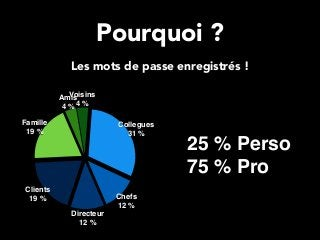
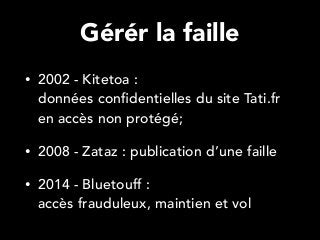
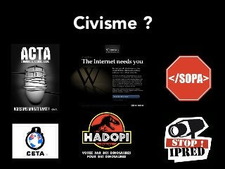

Skip to next slide
You can skip to the next slide in
3
Skip to next slide
You can skip to the next slide in
3
Skip to next slide
You can skip to the next slide in
3
Skip to next slide
You can skip to the next slide in
3
Skip to next slide
You can skip to the next slide in
3
Skip to next slide
You can skip to the next slide in
3
Skip to next slide
You can skip to the next slide in
3
Skip to next slide
You can skip to the next slide in
3
Skip to next slide
You can skip to the next slide in
3
Skip to next slide
You can skip to the next slide in
3
You are reading a preview.
Activate your 30 day free trial to continue reading.
Continue for Free
Share SlideShare
Facebook
Twitter
LinkedIn
Embed
Size (px)
Show related SlideShares at end
WordPress Shortcode
Link
Share
Email
1 Stunde iPhone
by Hans Dorsch
832 views
Formation excel 2
by abdelkrim abdellaoui
1278 views
Resume templates
by nina burleigh
543 views
2012 melanchon recupere_
by desintocx
444 views
Informationsfreiheit und Open Data ...
by clhanken
1290 views
Agile Tour Tunis 2013 : REX l'agili...
by Xavier Galleri
822 views
Top clipped slide



1
of
22
Ad
1
of
22
Ad